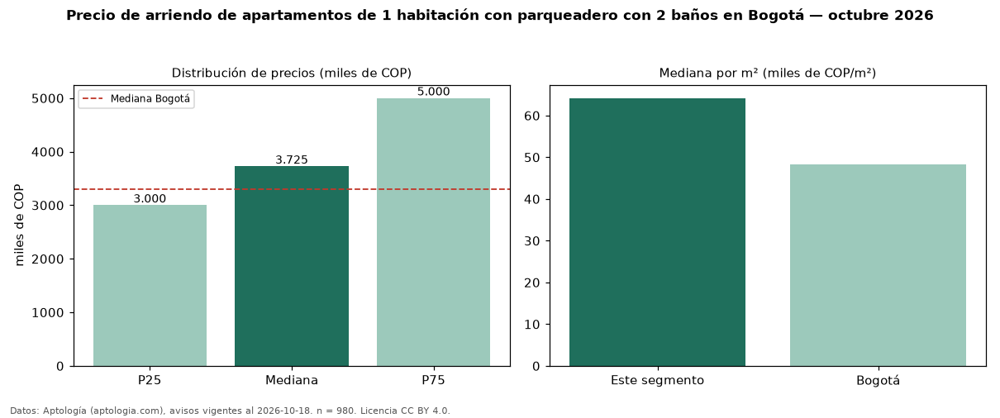

Precio de arriendo de apartamentos de 1 habitación con parqueadero con 2 baños en Bogotá — octubre 2026
En Bogotá, la mediana de canon mensual de apartamentos de 1 habitación con parqueadero con 2 baños es COP 3,73 millones, según 980 avisos vigentes. Frente a la mediana de los apartamentos de 1 habitación con parqueadero en arriendo de Bogotá (COP 3,20 millones, n = 1.966), queda 16 % por encima; este segmento reúne el 50 % de esos avisos. Por metro cuadrado, la mediana es COP 64.167/m² al mes (n = 931), 2 % por encima de los apartamentos de 1 habitación con parqueadero en arriendo de Bogotá (COP 63.214/m²). El área mediana anunciada es 59 m². La administración mediana declarada es COP 620.000 al mes (n = 517), aparte del canon. El estrato más frecuente es 6 (53 % de los avisos con estrato). La mediana de todos los apartamentos en arriendo de Bogotá es COP 3,30 millones (+13 % de diferencia). La mitad central de los avisos va de COP 3,00 millones a COP 5,00 millones (razón 1,7), una dispersión moderada. Datos: Aptología (aptologia.com), CC BY 4.0 — https://www.aptologia.com/arriendo/bogota. Archivos: PDF, CSV con las cifras y gráfica PNG.

| Avisos únicos | 980 |
|---|---|
| Percentil 25 | COP 3.000.000 |
| Mediana | COP 3.725.000 |
| Percentil 75 | COP 5.000.000 |
| Mediana por m² | COP 64.166 |
Fuente: avisos vigentes de portales inmobiliarios recopilados por Aptología, deduplicados (mínimo 30 avisos únicos por celda). Precios pedidos, no cerrados. Fecha: 2026-10-18.